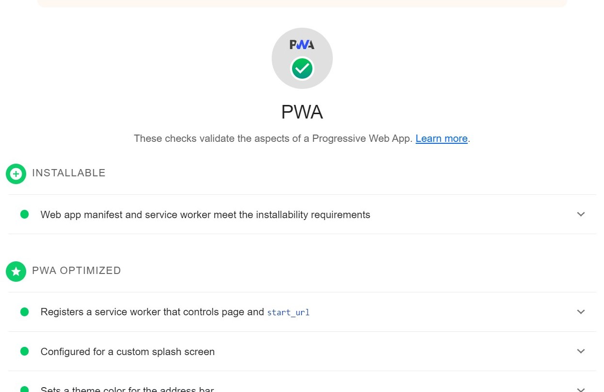

Case Study For Meet App
Overview
Meet App is a serverless, progressive web application (PWA) built with React using a test-driven development (TDD) technique. The Meet application uses Google Calendar API to fetch upcoming events.
Purpose & Context
Meet App was a personal project I built as part of my web development course at CareerFoundry to demonstrate my skills in building a progressive web application
Objective
The aim of the project was to have a Web application that is not only a normal web application but also has the benefits of both serverless architecture and Progressive Web Application (PWA). The problem that I wanted to solve in this project is to build a Serverless project that does not require backend maintainance, is easy to scale and available both offline and online
Approach
STEP 1:
I built the application using Test-driven development (TDD) which is a software development process that focuses on unit testing to ensure he integrity and success of the applcation or software and Behavior Driven Development's (BDD) Gherkin Syntax

STEP 2:
I wrote Lambda functions to implement severless technology in the application, I ensured the lambda functions were adequately tested and I created a serverless deployment package using AWS Lambda. I linked the application to Google Calendar to enable it fetch data concerning events.
STEP 3:
Application Performance Monitoring: I carried out Application Monitoring using Atatus to track the application's behaviour in production mode to enable me pinpoint and actively resolve any issues as soon as they arise and to ensure that everything works as expected

STEP 4:
I made the app a Progressive web Application such that it can be installed on both mobile devices and computers as well as work both offline and online
STEP 5:
I implemented Data visualization using Recharts library to draw a scatter chart that shows the number of events in each city around the world in the application and pie chart comparing the number of event genres. I also made each section of the piechart a different color.
Challenges
This was a very interesting project as I got to create an application that I could download both on my mobile and on desktop as well as use the application both offline and online. However, I encountered a major Cross-Origin Resource Sharing(CORS) issue which made me re-do the project twice. As a result of the issue, I was able to learn in depth about CORS policy and research for an answer.
Duration
I spent about 3 weeks on the entire project
Credits
Tutor: Andrew Gad
Mentor: Renish Bhaskaran